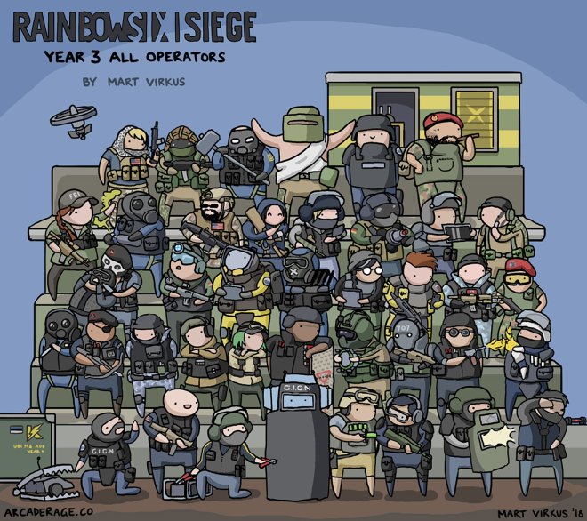

This is a guide about the basics of Tom Clancy's Rainbow Six Siege
Rainbow Six Siege is a game based on tatically breaching into a building and completing the objective, or defending
the objective from the forces attacking you another way to win is to eliminate all of the opposition.
There are 40 playable operators in Rainbow Six with each of with there own unique abilities. Each operator has
a armor and speed rating, the higher the armour the slower you move and vice versa. This allows for different
types of play such as roaming, anchoring, rushing, lurking.

Attachments
Every operator can put attachments on his gun. On guns, you can put an optic these are a red dot sight, reflex,
holographic sight, and ACOG. You can also put barrel attachments on these are compensator, muzzle brake,
flash hider, suppressor and an extended barrel. An optional laser, and two grips vertical grip or an angled
grip.
Attackers and Defenders
First, you pick an operator from a group of 20 attackers and defenders. Then the prep phase starts, this lasts
40 seconds. In the prep phase, the defenders place reinforcements on wall and hatches or placing their operator's
abilities. The attacker's drone to find the objective, discover what operator they picked, and plan out the
attack. After the prep phase, the action phase starts. The action phase lasts 3 to 4 minutes, you have to
creatively breach the objective complete it or defend the objective. Attackers can rappel on walls to get
a tactically advantage.
Objectives
There are three game modes, bomb, secure area and hostage. In bomb, you have to plant a defuser at one of two
bomb sites and defend it or if you're on defence you have to defend two bombs and if you the attackers plant
the defuser you have to disable to the defuser. In secure area, you have to defend a single room and protect
it from the attacks or you have to breach the single room and secure the room for a certain amount of time.
In hostage, you have to protect a hostage from being taken to an extraction point or breach the room and
take the hostage to the extraction point.